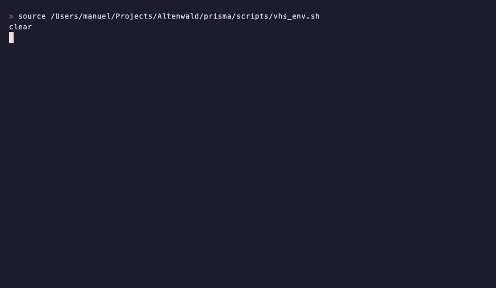

Static Type Analysis
Without the Wait.
Prisma brings together the sound pragmatism of Success Typing, the contract guarantees of Gradual Typing, and isolated .pplt tables for sub-second static verification with zero false positives.

Core Capabilities
Proven on Production Codebases
Engineered for immediate CI feedback, full developer trust, and zero workflow interruptions.
Sub-Second Speed
As seen in the live recording on RabbitMQ (234 modules), Prisma builds its index and finishes static verification in seconds. Full CI runs complete up to 6.3× faster with 20.8× less CPU than Dialyzer.
Modular .pplt Tables
Eliminates monolithic rebuilds. rebar3 prisma build compiles applications and dependencies into isolated, portable binary .pplt files (just 631 KB for RabbitMQ), loaded and merged in ~15 ms.
Zero-Friction Tooling
Add {plugins, [prisma]}. to rebar.config or {:prisma, ...} to mix.exs. Zero external runtime dependencies, no global server setups, and no ceremony.
Zero False Positives
Direct, clean error reports for contract mismatches ([gradual_mismatch]) and dead parameters ([oxbow_code]). If Prisma flags an issue, you can fix or delete it with total certainty.
Hybrid Verification
Combines Success Typing (inferring true failure conditions without annotations) with strict Gradual Typing across -spec and @spec contracts.
Native Elixir & Erlang
Written in pure Erlang, directly parsing BEAM abstract code and Elixir Dbgi chunks with full support for SSA variable versions, struct patterns %_{}, and Mix tasks.
Architecture
Monolithic PLT vs. Modular .pplt
Eliminating the bottleneck of monolithic PLT rebuilds with isolated per-package contracts.
- ✕ Single Monolithic Blob: Erlang base + all dependencies baked into one 100MB+ file.
- ✕ Full Invalidation: Bumping 1 transitive dependency invalidates the entire cache in CI.
- ✕ Heavy Resource Footprint: 1.46 GB RAM and 67.5s CPU time on 440 RabbitMQ modules.
-
✔
Isolated Package Tables: Each dependency in lockfile has its own portable
.pplt. - ✔ Zero Redundant Work: Clean dependencies are reused directly from disk cache.
- ✔ Dynamic In-Memory Merge: Contracts are merged in ~15 ms, focusing CPU purely on your app.
The 5-Stage Verification Pipeline
Performance on Real Code
Audited against RabbitMQ (commit 5dacb85, 234 and 440 BEAM modules) on Apple M1 macOS 27 (Erlang/OTP 29, 64-bit, JIT).
Measured Telemetry Summary
RabbitMQ commit 5dacb85| Metric | Prisma (234 mod) | Dialyzer (234 mod) | Prisma (440 mod) | Dialyzer (440 mod) | Advantage |
|---|---|---|---|---|---|
| Wall-Clock Time | 1.08 s | 6.75 s | 3.02 s | 17.27 s | 5.7× — 6.3× faster |
| Total CPU Time | 1.25 s | 26.0 s | 3.25 s | 67.55 s | 20.8× less CPU |
| Peak RAM (RSS) | 295.5 MiB | 405.1 MiB | 536.0 MiB | 1,456.7 MiB | 1.4× — 2.7× less RAM |
| Instructions Retired | 11.4 B | 176.1 B | 33.7 B | 467.2 B | 13.9× — 15.4× fewer |
| Seeded Faults (125 mutants) | 125 / 125 (100%) | 123 / 125 (98.4%) | 125 / 125 (100%) | 123 / 125 (98.4%) | 100% caught, 0 spurious |
hyperfine 2.0.0 --metrics all on Apple M1 (8 cores), macOS 27, Erlang/OTP 29.
Gradual mode vs Gradualizer: 5.3× faster on 440 modules (6.78s vs 35.89s, 100% vs 54% faults caught).
Quickstart
Zero-Config Integration
Add Prisma to your existing project with a single line of configuration.
Add to rebar.config:
{project_plugins, [
{prisma, "0.1.0"}
]}.rebar3 prismaAdd to deps in mix.exs:
defp deps do
[
{:prisma, "~> 0.1.0",
only: [:dev, :test],
runtime: false}
]
endmix prismaInstall globally via escript:
git clone https://github.com/altenwald/prisma
cd prisma
rebar3 escriptize
cp _build/default/bin/prisma /usr/local/bin/prisma check _build/default/lib/*/ebinSponsors & Partners
Prisma is open source software supported by founding engineering teams and community sponsors.
Explore companion developer tools
Check out Portolan (OpenAPI for Phoenix), Plotto (pure Elixir charts & SVG/PNG), and Press (zero-dependency PDF rendering).